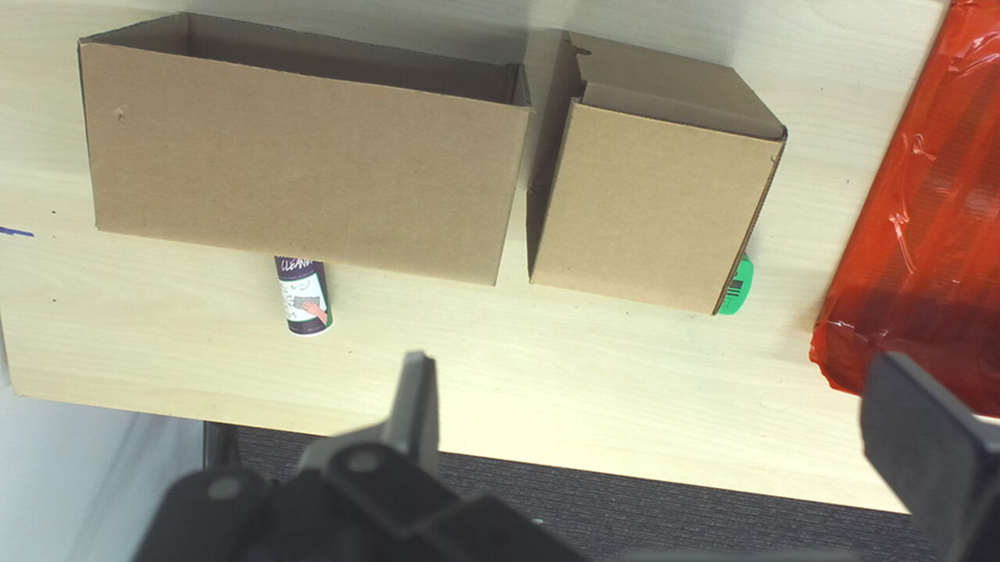
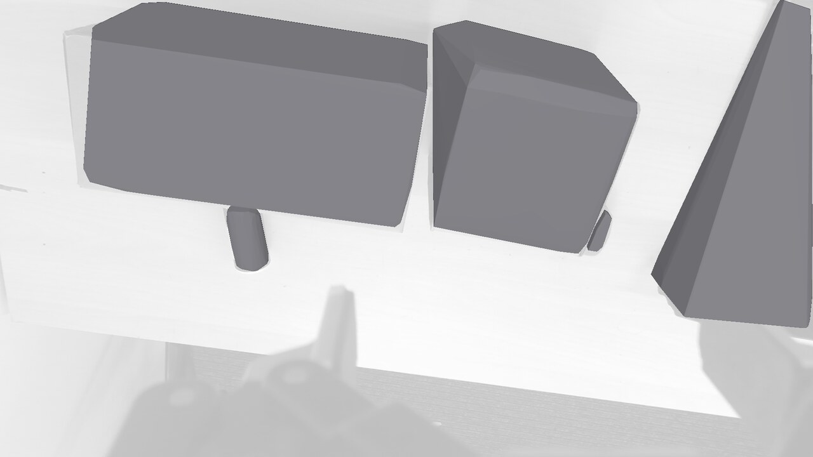
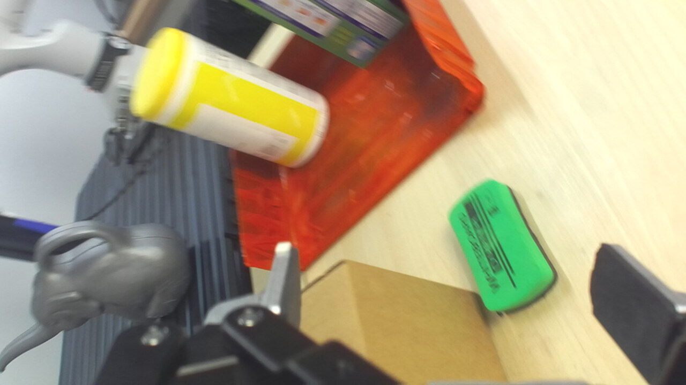
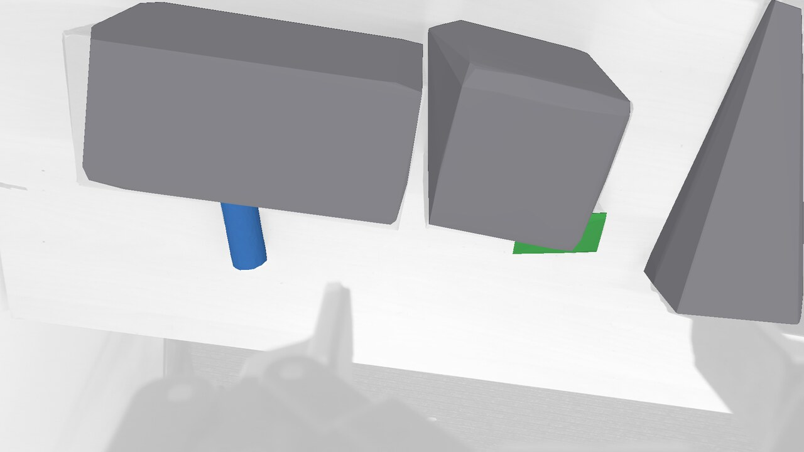
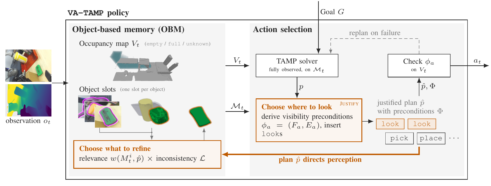
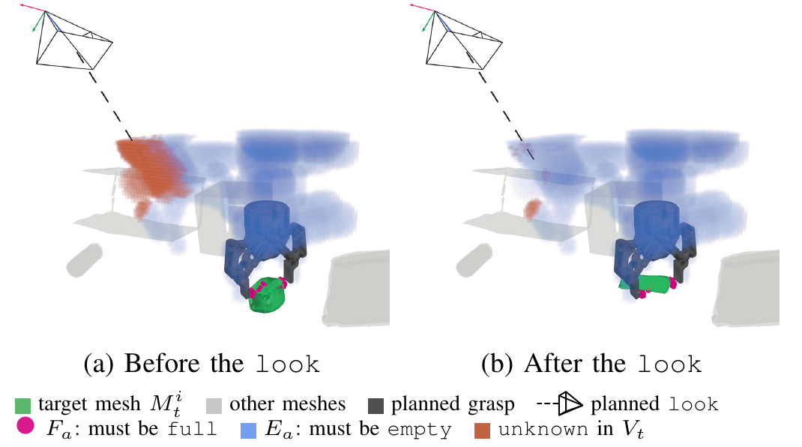
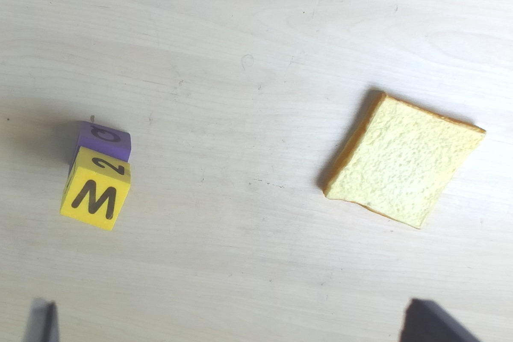
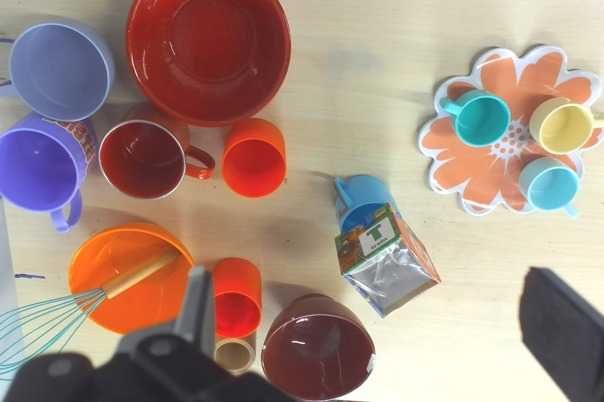
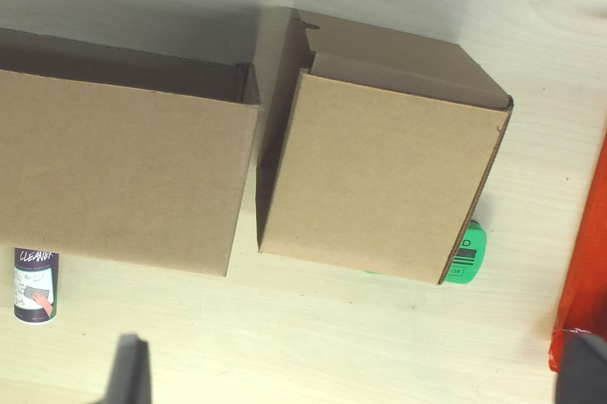

Long-horizon manipulation under uncertainty remains a challenging problem in robotics. We present VA-TAMP, an algorithm for Visibility-Aware Task and Motion Planning. VA-TAMP extends existing deterministic task and motion planning solvers to partially observable object rearrangement tasks, while still being able to take advantage of the efficiency and compositional generalization over long horizons of the base solver. This extension interleaves sensing actions into a plan skeleton that assumed full observability, and uses a novel persistent object-based memory to fuse observations into object mesh hypotheses and an observed occupancy map. We evaluate VA-TAMP on real-world tabletop rearrangement tasks which feature heavy occlusion and partial visibility and demonstrate that it outperforms baselines that do not perform active perception or have persistent memory.
A longstanding challenge in robotic manipulation is completing long-horizon tasks in heavily occluded environments with unfamiliar objects. When object models and poses are known a priori, Task and Motion Planning (TAMP) solvers can efficiently compose manipulation skills to achieve a goal. Otherwise, object models can be estimated from an observation and passed to a TAMP solver. These approaches assume that the initial observation models the scene accurately enough to find a goal-achieving plan.
Consider a tabletop rearrangement task, such as the one illustrated below, where the robot has to place the cleaning supplies on the red tray. In the initial observation, the full extent of the tray (which already has other cleaning supplies on it) is not visible to the robot, and the cleaning supplies that the robot has to manipulate are partially occluded by the cardboard boxes. This setting is partially observable; the robot does not know the full shape of any of the objects in the scene, and thus it must make a plan from raw observations which are noisy and incomplete.

(a) Initial wrist view. Goal:
{On(spray-bottle, red-tray), On(green-eraser, red-tray)}

(b) Initial scene estimate: a convex hull per detected object.

(c) A planned wrist view reveals the full extent of the eraser.

(d) Task-relevant objects refined into completed shapes.
The naive approach to this problem, re-estimating and replanning with every new observation, suffers from two main shortcomings. First, any single observation is not sufficient to accurately model the scene. Second, TAMP solvers output strictly goal-oriented plans, meaning that they cannot direct the perception toward the task-relevant parts of the scene or remove occluding objects. In the example above, no single view shows the far edge of the tray, and a plan that only reaches for the eraser never looks behind the boxes that occlude it. On the other end of the spectrum, belief space planners explicitly model uncertainty in the environment state and search for plans by reasoning over full observation distributions obtained by each action. However, modeling geometric uncertainty requires reasoning over extremely high-dimensional distributions which quickly becomes intractable.
Our approach exploits the compositional generalization and efficiency of TAMP solvers while tracking object model accuracy and unobserved regions of space. VA-TAMP augments off-the-shelf TAMP solvers with action constraints requiring the robot to verify its object models before interacting with the objects. These constraints induce information gathering actions that provide observations for refining the models.
VA-TAMP extends fully observed TAMP to partially observed domains by coupling object-based memory with scene-model verification. The memory supplies object meshes and an occupancy grid, and the planner constructs a goal-reaching plan that also validates the meshes. As observations arrive, the remaining plan guides refinement of task-relevant objects.

Overview of VA-TAMP.
RGB-D observations update an object-based memory (OBM), which maintains observed occupancy \(V_t\) and
object mesh hypotheses \(\mathcal{M}_t\). Given a goal \(G\), a fully observed TAMP solver computes a plan
\(p\) over \(\mathcal{M}_t\). Justify uses \(\mathcal{M}_t\)
and \(V_t\) to derive a set of visibility preconditions \(\Phi\) and insert look actions to
produce a justified plan \(\hat p\). These preconditions are checked against \(V_t\) to select the next
action \(a_t\) or trigger replanning. The plan also guides OBM refinement, prioritizing mesh hypotheses
that are relevant to the plan and inconsistent with accumulated observations.
Given a set of object meshes, we can leverage existing classical TAMP solvers to generate a plan skeleton: an optimistic plan that assumes the current object meshes are accurate and is entirely goal-oriented. To guard against this optimism, we require that every plan be justified. This means that any time the plan requires the robot to move through space, it must have observed that the space is collision free. Any time the plan requires the robot to grasp an object at a given pose, it must have observed that the object surface exists in between the fingers at that pose. To justify a plan, the planner has to find motions that move the camera to viewpoints where the desired regions are visible. The initial hull of the green eraser (b) does not justify a grasp; the planner inserts the wrist view in (c), which reveals the eraser's full extent and lets the grasp proceed.
VA-TAMP takes a model-predictive control style approach to constructing a policy. We combine a state estimator which computes models of the scene conditioned on observations with an action-selection module which selects an action conditioned on the goal and current scene models. On execution of the action, the policy receives a new observation, which it uses to update its model and continue execution or replan. The action selection starts by solving a fully observed TAMP problem assuming \(\mathcal{M}\) is the true state to get a plan backbone \(p\). The Justify procedure derives observation-conditioned preconditions for manipulation actions and then interleaves sensing actions into the plan to verify the preconditions to get the justified plan \(\hat{p}\). If the preconditions hold in the true scene, we execute the actions in the plan and receive new observations, which are used to update the OBM. If the preconditions do not hold, the OBM is queried for a fresh scene model to plan against.
In order to build and refine our scene representation as we observe more of the scene and objects move, we define an Object-Based Memory module (OBM). The OBM collects a history of observations and maintains two complementary representations of the scene. The first representation is an occupancy grid, which accumulates depth data and tracks the regions of space that have not yet been observed. The second representation is a set of objects that are believed to exist in the scene after being detected in individual observations. The OBM associates these detections on a per-object basis and leverages a generative image-to-3D reconstruction model to hypothesize a complete 3D mesh geometry from partial RGBD observations.
Formally, the OBM takes as input an observation history \(o_{1:t}\) and the robot's current plan
\(\hat{p}\). It returns a collection of posed surface meshes \(\mathcal{M}_t\) and an occupancy map
\(V_t\), where each voxel is labeled empty, full, or unknown.
Our OBM maintains a set of object slots, each representing a hypothesized object through its observation history and current 3D geometry estimate. For each observation, we query a VLM for bounding boxes of objects on the table, then use a segmentation model to refine each box into an object mask. These detections are then either associated with an existing object slot, by matching DINO and geometric similarity, or initialize a new object slot. Image-to-3D generative models provide a data driven prior for object completion.
The voxel grid \(V\) is instantiated from the first observation and updated in real time as new observations arrive. Querying the generative shape model is slow relative to the observation frequency, so the OBM makes at most one query per perception step, running in parallel with robot execution. Estimating \(\mathcal{M}_t\) is therefore a sequential decision problem: at each step, the OBM chooses which object to refine and whether the returned mesh should replace its current hypothesis.
The OBM is resource-rational and task-centric: it focuses its computation time on objects that the planner has decided are relevant to the task. Because the true geometries in the scene are unknown, we define a surrogate cost \(\mathcal{L}\) which measures how inconsistent a candidate posed mesh is with the object detections and observed points. The OBM then greedily picks the slot whose current estimate is the most inconsistent with its evidence, weighted by task relevance,
\( i^{*} = \arg\max_{i}\; w(M_t^i, \hat{p}_t)\, \mathcal{L}(M_t^i, \mathcal{P}_t^i, \mathcal{D}_t^i), \qquad w(M_t^i, \hat{p}_t) = \exp\!\Big(-\beta \min_{x \in M_t^i,\; y \in \tau_{ee}(\hat{p}_t)} \|x - y\|\Big), \)
where \(\tau_{ee}(\hat{p}_t)\) is the end-effector path swept by the current plan. The selected slot is passed to the image-to-3D model, and the returned mesh replaces the current hypothesis only if it is more consistent with the accumulated observations. In the motivating example, the eraser and tray are refined into complete meshes while the cardboard boxes are left as the coarse hulls from the first frame.
The input to plan justification is a plan \(p = (a_1, \ldots, a_n)\) from a TAMP solver that treated
the OBM's mesh hypotheses \(\mathcal{M}_t\) as ground truth. The output is a justified plan
\(\hat{p}\), which interleaves Look actions with the original manipulation actions in
\(p\), and a set of visibility preconditions \(\Phi\). These preconditions are tested before
each action executes, and hold when the constraints on the hypothesized meshes \(\mathcal{M}_t\) are
supported by the observed occupancy grid \(V_t\). A justified plan should be valid: before each
manipulation action, the preceding Look actions should have labeled every voxel its
precondition depends on. It should also be efficient, avoiding observations that increase the
original plan's cost without validating or helping refine a task-relevant object.
Looks are inserted by a fixed rule. For each pick and place pair in \(p\), a
look for the pick's precondition and another for the place's precondition are both
inserted immediately before the pick. The place's look is not deferred until after the
pick because, once the robot grasps something, the hand is no longer free and the wrist camera cannot
collect new observations. The policy then executes \(\hat{p}\) in order, checking each precondition
against the current \(V_t\) before its action runs and returning to the OBM for a fresh scene estimate
when a check fails: if \(\phi\) is not satisfied, replan.
Observe the parts of the environment the plan interacts with, replan if the observations contradict
the estimated meshes. A fully observed TAMP solution is justified by inserting look
actions at planned look poses; when the observed spray can occupies space assumed empty, the robot
replans with updated meshes.

Every visibility precondition is a tuple of point sets \(\phi_a = (F_a, E_a)\), where every point in
\(F_a\) must be labeled full and every point in \(E_a\) must be labeled
empty.
The figure shows a precondition for pick(eraser, g, q). (a) The precondition computed
from an estimated \(\mathcal{M}_t\). The finger contacts \(F_a\) (pink) must read full,
and the swept volume of the gripper along the grasp trajectory \(E_a\) must read empty.
The blue cells are known to be empty, the orange cells are unknown. (b) After the look, the
required cells are observed and \(\phi_a\) holds.
pick: the antipodal constraint on the grasp depends on the surface of the object
at the two finger contacts, so \(F_a\) contains the points on the object where the finger pads close.
The collision-free constraint is on the volume swept by the arm while approaching the grasp, so
\(E_a\) contains samples of this volume.
place: the support constraint starts by defining the “footprint” of
the object as the projection of its volume onto a plane at its lowest point. \(F_a\) contains a column
of points below each cell of the footprint, satisfied when any point in the column is labeled
full. The collision-free constraint depends on the footprint at the placement, the volume
swept by the held object along its carry, and the volume swept by the arm, so \(E_a\) contains samples
of all three.
The visibility precondition holds when a fixed fraction of the constrained points have been observed and have the required label. Preconditions are derived once from the plan with respect to \(\mathcal{M}_t\) and re-derived whenever \(\mathcal{M}_t\) changes.
look operator
Satisfying a visibility precondition requires new observations. The Look action takes a
precondition and a sequence of camera poses. A single pose is insufficient when the points of a
precondition do not fit in one field of view, or are occluded from one direction and visible from
another. The sampler for the camera poses is a greedy set cover over the subset of \(F_a \cup E_a\)
that is currently labeled unknown in \(V_t\). Each round selects an unknown
point and samples candidate camera poses on the surface of a sphere around that point, oriented to look
at the point. Samples are discarded if they are kinematically infeasible, are predicted to be occluded
by other objects in the scene, or move the robot through points not labeled empty. Among
the surviving samples, we keep the one whose field of view contains the most points in the precondition
that are still unknown. If no cover can be found, the precondition is marked unobservable;
its precondition then fails at execution time and the policy replans. Because the underlying TAMP solver
assumes full observability, the Look actions assume that there is some viewpoint from which
the region can be viewed, rather than planning actions to increase the visibility. In order to construct
a solvable problem for the fully observed TAMP planner, we also assume that the initial observation
contains every object referenced in the goal statement.
We find that each layer of added task complexity motivates another component of VA-TAMP. Each pair below shows the same task executed with and without one component.
Left: open-loop planning from the initial observation. The yellow block is covered and under approximated so it is placed too close to the edge.
Right: updating models online. The OBM updates the yellow block when its full extent is revealed.
In the Cubes on Bread task, the bottom cube was occluded, which required a memory system to associate and update the initial bottom cube representation after revealing the full extent.
Left: task-agnostic slot selection \(\arg\max \mathcal{L}_i\). The blue cup is covered by the box and under approximated.
Right: task-weighted slot selection \(\arg\max \mathcal{L}_i \cdot w_i\). Allocating compute to task-relevant objects allows the blue cup to be updated and grasped correctly.
The Teacup on Plate task clutters the scene with many task-irrelevant objects. An OBM that focused on greedily improving the worst mesh in the scene would miss the task-relevant objects. By weighing the objects higher due to their proximity to the robot in its nominal plan, the objects are refined earlier by the OBM.
Left: updating models based on passively collected observations. The robot grasps the spray can without getting a good view first: the grasp fails.
Right: updating models based on actively collected observations. The robot grasps the spray can after observing and updating models: the grasp succeeds.
In the Supplies on Tray task, the robot does not incidentally receive useful information while performing goal-oriented tasks. The cardboard boxes occlude the cleaning supplies visually but do not prevent the robot from reaching for those supplies, so the robot has to plan observations which do not directly interact with the objects in the scene, but do serve to validate the robot's scene models.
Planned motion over the OBM's current mesh hypotheses, including the inserted looks.
The same run executed on the Franka FR3.
Partially observable object rearrangement is a ubiquitous but surprisingly under-studied problem setting and, as such, there are no directly comparable existing methods. We explore the effectiveness of VA-TAMP in three scenarios of increasing complexity that were specifically designed to stress different aspects of the problem. Our ablations and tasks are designed to explore the following questions:
Q1: Do planned views derived from the current scene estimate generate useful targets for active perception?
Q2: Does a task-centric approach to model refinement improve downstream planning performance?
We answer Q1 by defining the visibility-unaware ablation VUTAMP, which does not
actively plan observation actions or derive visibility preconditions for replanning. We answer
Q2 by defining the VUTAMP-UNIFORM ablation, which follows the same planning and
replanning loop as VUTAMP, but the update strategy for the OBM is task-agnostic. Finally,
we compare against TiPToP, an open-loop model-based planning system that forms initial
conservative estimates of the scene and executes the generated plan open-loop, without updating on new
observations.
We perform evaluations on the Franka FR3 with a ZED-M wrist camera. The perception pipeline uses Gemini-ER-2 as the VLM, SAM2 as the segmentation model, and RecGen as the image-to-3D reconstruction model. The fully observed TAMP solver we use is cuTAMP, a GPU-parallelized TAMP solver.

Cubes on Bread. The robot must pick up two stacked blocks and place both of them on the slice of bread. Moving the top block reveals the extent of the bottom block.

Teacup on Plate. The robot has to move the blue cup from the table to the flower-shaped plate. To do this, it must first take the occluding block off the cup.

Supplies on Tray. Two cleaning supplies are occluded by the boxes in the scene, which the robot has to look behind. The tray also has collision obstacles that are not visible from the initial view.
The initial wrist-camera view of each task.
| Method | Cubes on Bread | Teacup on Plate | Supplies on Tray |
|---|---|---|---|
| TiPToP | 2 / 10 | 3 / 10 | 0 / 10 |
VUTAMP-UNIFORM | 8 / 10 | 3 / 10 | 2 / 10 |
VUTAMP | 8 / 10 | 9 / 10 | 2 / 10 |
| VA-TAMP | 9 / 10 | 10 / 10 | 10 / 10 |
Success rate (successful trials / attempted trials) for each method on each scene.
In the Cubes on Bread task, TiPToP's failures could be divided largely into grasp failures due to
trying to place the robot's finger inside the body of the bottom cube, and placement failures due to
trying to place the bottom cube onto a region of the toast that the top cube had already occupied.
Because VUTAMP-UNIFORM was able to update its memories, it could outperform TiPToP.
In the Cubes on Bread task, there were only three objects in the scene and they were all
task-relevant. The Teacup on Plate task introduces another layer of complexity by cluttering the
scene with many task-irrelevant objects. By weighing the objects higher due to their proximity to the
robot in its nominal plan, the objects are refined earlier by the OBM, leading to VUTAMP
outperforming VUTAMP-UNIFORM.
In the Supplies on Tray task, the two main failure modes were grabbing an object about its longer axis (which seemed collision-free due to the cardboard box occlusion), or trying to place the objects on the red tray at an orientation that caused collision with the obstacles already there. In both cases, the robot had to plan observations which did not directly interact with the objects in the scene, but did serve to validate the robot's scene models. VA-TAMP is the only method that does this and thus has the strongest performance on this task.
Our tabletop experiments showed that both components were necessary in scenes with distractor objects, occlusion, and out-of-frame obstacles. Our approach assumes that the initial observation supports a nominal plan that can guide information gathering. Integrating object search could extend it to settings in which some objects are missing from the scene model. We currently use generative shape models conditioned on a single image. Models that incorporate multiple observations offer a promising alternative, but their inference time scales poorly with the number of views. Selecting informative or diverse subsets of observations could help make these models practical within the OBM. Finally, reconstruction methods that combine RGBD observations with contact could extend plan justification to include touch-based verification.
@inproceedings{vatamp2027,
author = {Anonymous Authors},
title = {Visibility-Aware Task and Motion Planning with Task-Centric Perception},
booktitle = {Submitted to IEEE International Conference on Robotics and Automation (ICRA)},
year = {2027},
}